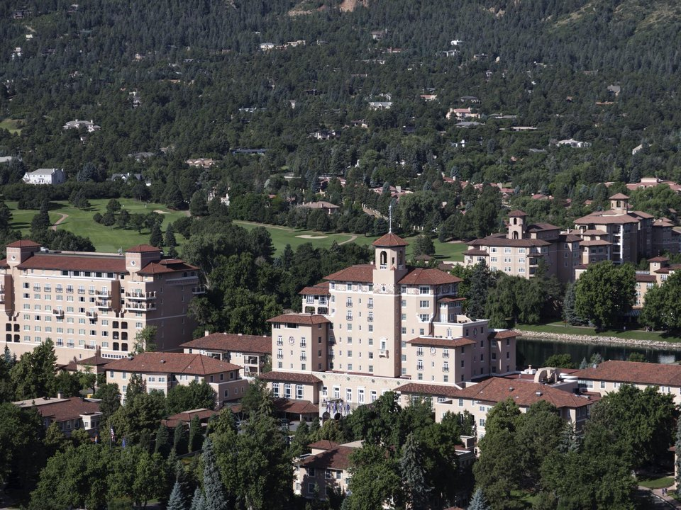

Cheyenne Mountain · Grand resort
The Broadmoor
A historic lakeside resort with golf, a spa and wilderness outposts.
Official details for The BroadmoorA grand resort below Pikes Peak.
Colorado Springs pairs one of America’s great resorts with some of its most famous scenery. Land at Colorado Springs Airport, check in at the Broadmoor, a 1918 lakeside resort with golf and a celebrated spa, walk among the sandstone fins of Garden of the Gods, and ride the Broadmoor Manitou and Pikes Peak Cog Railway to the 14,115-foot summit. Pilots can visit the Peterson Air & Space Museum on the neighboring base.

Time illustration: direct distance at 150 KTAS plus 15 minutes for departure and arrival, matching the discovery page. Use ForeFlight for your actual flight plan.
KCOS, Colorado Springs Airport, is a towered Class C airport at 6,187 feet with three long runways, about 20 minutes from the Broadmoor. It shares the field with Peterson Space Force Base.
Colorado Springs Airport, Colorado Springs, CO
Another FBO: jetCenters of Colorado (877-853-7523). Class C with military and airline traffic; brief the procedures. Strong westerly winds and mountain wave are common off the Front Range. Meadow Lake (KFLY) is a quieter general-aviation alternative northeast of the city. No live fuel price is shown.
Front Range flying: strong westerly winds and mountain wave off the Rockies, high density altitude in summer, afternoon thunderstorms from June to August, and fast-changing winter weather. About 1280 nm from Myrtle Beach: two long days each way with several fuel stops. Plan a week, or overnight on the way out and back.
Rates and availability need travel dates. Book the Broadmoor early for summer weekends.
A historic lakeside resort with golf, a spa and wilderness outposts.
Official details for The BroadmoorAll-inclusive mountain outposts run by the Broadmoor.
Official details for Broadmoor Cloud Camp and Ranch at Emerald ValleyA resort and spa on a ridge overlooking the red rocks.
Official details for Garden of the Gods ResortA downtown hotel on a site that has held an Antlers hotel since 1883, with Pikes Peak views.
Official details for The AntlersA small, locally owned hotel downtown, built for outdoor travelers.
Official details for Kinship LandingHotels in the city and Manitou Springs.
Visit COS for More places to stayReserve weekend dinners.
The Broadmoor’s top-floor restaurant with views over the city.
Official details for The Penrose RoomRestaurants downtown and in Manitou Springs.
Visit COS for More restaurantsReserve cog railway tickets ahead.
The highest cog railway in the world, to a 14,115-foot summit.
Broadmoor Manitou and Pikes Peak Cog RailwayAircraft and space history on the neighboring base; check access rules before you go.
Peterson Air & Space MuseumThis prototype links to the local visitor site. It does not yet match events to your travel dates.
The best time for Pikes Peak.
Cog Railway for Summit seasonThe famous race to the clouds.
Visit COS for Pikes Peak International Hill ClimbGolf, spa and holiday lights.
The Broadmoor for The BroadmoorCheck the local calendar when choosing a weekend, and confirm dates and tickets with the organizer.
A sample Broadmoor weekend. This is a two-day flight each way; plan a week. No bookings or availability confirmed.
Land at KCOS mid-morning.
Garden of the Gods.
Lunch in Manitou Springs, then back to the airport.
Land at KCOS, subject to weather, density altitude and your actual flight plan.
Check in at the Broadmoor and walk the lake.
Dinner at the Penrose Room.
The cog railway up Pikes Peak.
Garden of the Gods and Manitou Springs.
Dinner at the resort.
The Olympic & Paralympic Museum.
Compute takeoff performance for the morning temperature and allow time at the FBO.
Mountain afternoons bring wind, turbulence and storms; leave early.
The cog railway up Pikes Peak.
The Broadmoor spa.
Dinner at the Penrose Room.
These details make the difference between an appealing list and a usable getaway.
Resort first, then cog railway tickets.
About 1,280 nm: two days each way.
The summit is above 14,000 feet; go slowly.
May to October.
Picks and links reviewed by WingAway Weekends. Hours, prices, menus and availability change often, so confirm directly with each place before booking. Spotted something out of date, or have a favorite we missed? Email us at hello@wingawayweekends.com.
WingAway Weekends helps you discover the destination. Use ForeFlight and current official aviation information for route, performance, weather, NOTAMs and preflight decisions. Flight planning and PIC responsibility stay with the pilot.
One fly-in weekend, a Fly to Lunch pick and the newest guides, about once a month.
Free. Unsubscribe anytime.